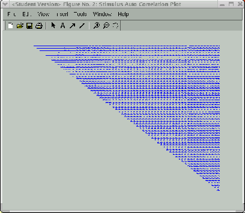
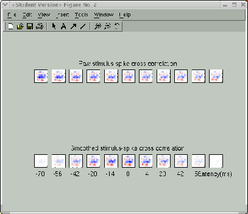

Next: Display STRFs Window
Up: Application of the STRFPAK
Previous: Estimate
Contents
As mentioned above, the second-order statistics of the stimulus
ensemble has been computed in the Calculation stage.
This window visually display the above results.
Three display options are provided: displaying stimulus
auto-correlation matrix; displaying raw and
smoothed stimulus-response cross-correlation;
and displaying  raw and smoothed cross-correlation
in a separate window. These options are implemented as a popup menu
in the top right of the window.
raw and smoothed cross-correlation
in a separate window. These options are implemented as a popup menu
in the top right of the window.
Figure 3.8 shows the stimulus auto-correlation matrix
in the space-time domain for the auditory example. Each entry in the matrix
corresponds to the temporal cross-correlation of the sound
amplitude in two different frequency bands. It is organized with
lowest center frequency of the band at the top left corner and the
highest frequency at the bottom right (see ![[*]](file:/usr/share/latex2html/icons/crossref.png) for details).
Figure 3.9 shows raw stimulus-response
cross-correlation (also called Spike-triggered Average (STA)) and smoothed stimulus-response cross-correlation
for the visual example.
From this figure, the significant Gabor structure
in the STA occurs in the sixth frame.
for details).
Figure 3.9 shows raw stimulus-response
cross-correlation (also called Spike-triggered Average (STA)) and smoothed stimulus-response cross-correlation
for the visual example.
From this figure, the significant Gabor structure
in the STA occurs in the sixth frame.
Figure 3.8:
Display stimulus auto-correlation for the auditory example
|  |
Figure 3.9:
Display stimulus-response cross-correlation for the visual example
|  |
Next: Display STRFs Window
Up: Application of the STRFPAK
Previous: Estimate
Contents
2003-03-19